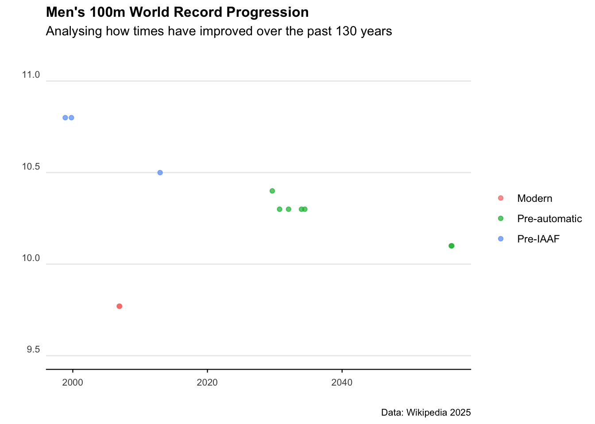

# Install development version of rvest if necessary
if (numeric_version(packageVersion("rvest")) < numeric_version("0.99.0")) {
remotes::install_github("tidyverse/rvest")
}
# Load and install the packages that we'll be using today
if (!require("pacman")) install.packages("pacman")
pacman::p_load(tidyverse, rvest, lubridate, janitor, data.table, hrbrthemes)
library(ggplot2)
library(dplyr)
library(tidyverse)Web scraping
Why it matters
Collecting data off websites can be a nightmare. The worst case is manually typing data from a web-page into spreadsheets… but there are many steps we can do before resorting to that.
This chapter will outline the process for pulling data off the web, and particularly for understanding the exact web-page element we want to extract.
The notes and code loosely follow the fabulous data tutorial by Grant R. McDermott in his Data Science for Economists series. It has been updated to scrape the most recent version and structure of the relevant Wikipedia pages.
First up, let’s load some packages.
Anatomy of a webpage
Web pages can be categorized as either server-side rendered (where content is embedded in the HTML) or client-side rendered (where content loads dynamically using JavaScript). When scraping server-side rendered pages, locating the correct CSS or XPath selectors is crucial.
Trawling through CSS code on a webpage is a bit of a nightmare - so we’ll use a chrome extension called SelectGadget to help.
The R package that’s going to do the heavy lifting is called rvest and is based on the python package called Beauty Soup.
Scraping a table
Let’s use this wikipedia page as a starting example. It contains various entries for the men’s 100m running record.
We can start by pulling all the data from the webpage.
m100 <- rvest::read_html(
"http://en.wikipedia.org/wiki/Men%27s_100_metres_world_record_progression"
)
m100{html_document}
<html class="client-nojs vector-feature-language-in-header-enabled vector-feature-language-in-main-page-header-disabled vector-feature-page-tools-pinned-disabled vector-feature-toc-pinned-clientpref-1 vector-feature-main-menu-pinned-disabled vector-feature-limited-width-clientpref-1 vector-feature-limited-width-content-enabled vector-feature-custom-font-size-clientpref-1 vector-feature-appearance-pinned-clientpref-1 skin-theme-clientpref-day vector-sticky-header-enabled wp25eastereggs-enable-clientpref-1 vector-toc-available" lang="en" dir="ltr">
[1] <head>\n<meta http-equiv="Content-Type" content="text/html; charset=UTF-8 ...
[2] <body class="skin--responsive skin-vector skin-vector-search-vue mediawik ...…and we get a whole heap of mumbo jumbo.
To get the table of ‘Unofficial progression before the IAAF’ we’re going to have to be more specific.
Using the SelectGadget tool we can click around and identify that that specific table.
pre_iaaf <-
m100 %>%
html_element("div+ .wikitable :nth-child(1)") %>% ## select table element
html_table() ## convert to data frame
pre_iaaf# A tibble: 21 × 5
Time Athlete Nationality `Location of races` Date
<dbl> <chr> <chr> <chr> <chr>
1 10.8 Luther Cary United States Paris, France 4 July 18…
2 10.8 Cecil Lee United Kingdom Brussels, Belgium 25 Septem…
3 10.8 Étienne De Ré Belgium Brussels, Belgium 4 August …
4 10.8 L. Atcherley United Kingdom Frankfurt/Main, Germany 13 April …
5 10.8 Harry Beaton United Kingdom Rotterdam, Netherlands 28 August…
6 10.8 Harald Anderson-Arbin Sweden Helsingborg, Sweden 9 August …
7 10.8 Isaac Westergren Sweden Gävle, Sweden 11 Septem…
8 10.8 Isaac Westergren Sweden Gävle, Sweden 10 Septem…
9 10.8 Frank Jarvis United States Paris, France 14 July 1…
10 10.8 Walter Tewksbury United States Paris, France 14 July 1…
# ℹ 11 more rowsNiiiiice - now that’s better. Let’s do some quick data cleaning.
pre_iaaf <- pre_iaaf %>%
clean_names() %>%
mutate(date = mdy(date))
pre_iaaf# A tibble: 21 × 5
time athlete nationality location_of_races date
<dbl> <chr> <chr> <chr> <date>
1 10.8 Luther Cary United States Paris, France NA
2 10.8 Cecil Lee United Kingdom Brussels, Belgium NA
3 10.8 Étienne De Ré Belgium Brussels, Belgium NA
4 10.8 L. Atcherley United Kingdom Frankfurt/Main, Germany NA
5 10.8 Harry Beaton United Kingdom Rotterdam, Netherlands NA
6 10.8 Harald Anderson-Arbin Sweden Helsingborg, Sweden NA
7 10.8 Isaac Westergren Sweden Gävle, Sweden 1998-11-18
8 10.8 Isaac Westergren Sweden Gävle, Sweden 1999-10-18
9 10.8 Frank Jarvis United States Paris, France NA
10 10.8 Walter Tewksbury United States Paris, France NA
# ℹ 11 more rowsLet’s also scrape the data for the more recent running records. That’s the tables named ‘Records (1912-1976)’ and ‘Records since 1977’.
For the second table:
iaaf_76 <- m100 %>%
html_element("#mw-content-text > div > table:nth-child(17)") %>%
html_table()
iaaf_76 <- iaaf_76 %>%
clean_names() %>%
mutate(date = mdy(date))
iaaf_76# A tibble: 54 × 8
time wind auto athlete nationality location_of_race date ref
<dbl> <chr> <dbl> <chr> <chr> <chr> <date> <chr>
1 10.6 "" NA Donald Lippi… United Sta… Stockholm, Swed… NA [2]
2 10.6 "" NA Jackson Scho… United Sta… Stockholm, Swed… NA [2]
3 10.4 "" NA Charley Padd… United Sta… Redlands, USA NA [2]
4 10.4 "0.0" NA Eddie Tolan United Sta… Stockholm, Swed… 2029-08-19 [2]
5 10.4 "" NA Eddie Tolan United Sta… Copenhagen, Den… NA [2]
6 10.3 "" NA Percy Willia… Canada Toronto, Canada 2030-09-19 [2]
7 10.3 "0.4" 10.4 Eddie Tolan United Sta… Los Angeles, USA 2032-01-19 [2]
8 10.3 "" NA Ralph Metcal… United Sta… Budapest, Hunga… 2033-12-19 [2]
9 10.3 "" NA Eulace Peaco… United Sta… Oslo, Norway 2034-06-19 [2]
10 10.3 "" NA Chris Berger Netherlands Amsterdam, Neth… NA [2]
# ℹ 44 more rowsAnd now for the third table:
iaaf <- m100 %>%
html_element("#mw-content-text > div.mw-parser-output > table:nth-child(23)") %>%
html_table() %>%
clean_names() %>%
mutate(date = mdy(date))
iaaf# A tibble: 24 × 9
time wind auto athlete nationality location_of_race date
<dbl> <chr> <dbl> <chr> <chr> <chr> <date>
1 10.1 1.3 NA Bob Hayes United States Tokyo, Japan NA
2 10.0 0.8 NA Jim Hines United States Sacramento, USA NA
3 10.0 2.0 NA Charles Greene United States Mexico City, Mexico NA
4 9.95 0.3 NA Jim Hines United States Mexico City, Mexico NA
5 9.93 1.4 NA Calvin Smith United States Colorado Springs, … NA
6 9.83 1.0 NA Ben Johnson Canada Rome, Italy NA
7 9.93 1.0 NA Carl Lewis United States Rome, Italy NA
8 9.93 1.1 NA Carl Lewis United States Zürich, Switzerland NA
9 9.79 1.1 NA Ben Johnson Canada Seoul, South Korea NA
10 9.92 1.1 NA Carl Lewis United States Seoul, South Korea NA
# ℹ 14 more rows
# ℹ 2 more variables: notes_note_2 <chr>, duration_of_record <chr>How good. Now let’s bind the rows together to make a master data set.
wr100 <- rbind(
pre_iaaf %>% dplyr::select(time, athlete, nationality, date) %>%
mutate(era = "Pre-IAAF"),
iaaf_76 %>% dplyr::select(time, athlete, nationality, date) %>%
mutate(era = "Pre-automatic"),
iaaf %>% dplyr::select(time, athlete, nationality, date) %>%
mutate(era = "Modern")
)
wr100# A tibble: 99 × 5
time athlete nationality date era
<dbl> <chr> <chr> <date> <chr>
1 10.8 Luther Cary United States NA Pre-IAAF
2 10.8 Cecil Lee United Kingdom NA Pre-IAAF
3 10.8 Étienne De Ré Belgium NA Pre-IAAF
4 10.8 L. Atcherley United Kingdom NA Pre-IAAF
5 10.8 Harry Beaton United Kingdom NA Pre-IAAF
6 10.8 Harald Anderson-Arbin Sweden NA Pre-IAAF
7 10.8 Isaac Westergren Sweden 1998-11-18 Pre-IAAF
8 10.8 Isaac Westergren Sweden 1999-10-18 Pre-IAAF
9 10.8 Frank Jarvis United States NA Pre-IAAF
10 10.8 Walter Tewksbury United States NA Pre-IAAF
# ℹ 89 more rowsExcellent. Let’s plot the results.
ggplot(wr100) +
geom_point(aes(x = date, y = time, col = era), alpha = 0.7) +
labs(
title = "Men's 100m World Record Progression",
subtitle = "Analysing how times have improved over the past 130 years",
caption = "Data: Wikipedia 2025",
x = "",
y = ""
) +
theme_minimal() +
scale_y_continuous(limits = c(9.5, 11), breaks = c(9.5, 10, 10.5, 11)) +
theme(
axis.text.y = element_text(vjust = -0.5, margin = ggplot2::margin(l = 20, r = -20)),
plot.subtitle = element_text(margin = ggplot2::margin(0, 0, 25, 0), size = 11),
legend.title = element_blank(),
plot.title = element_text(face = "bold", size = 12),
plot.caption = element_text(size = 8),
axis.text = element_text(size = 8),
panel.grid.minor = element_blank(),
panel.grid.major.x = element_blank(),
axis.line.x = element_line(colour = "black", size = 0.4),
axis.ticks.x = element_line(colour = "black", size = 0.4)
)